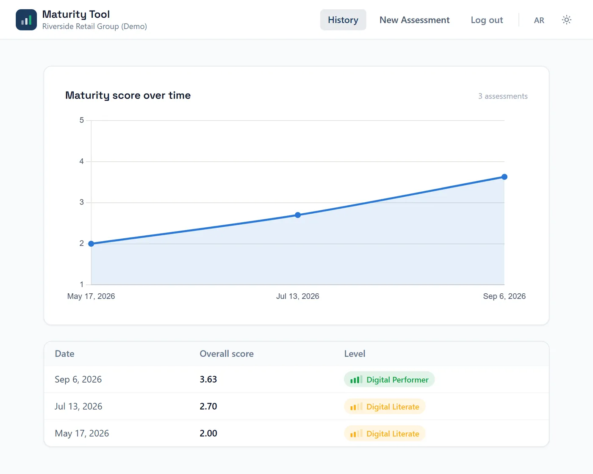

Back to projects

Digital Transformation Maturity Tool
Most digital-maturity assessments are a one-time survey: a snapshot an organization takes once and files away. This app treats the assessment as something to revisit. Retake it every quarter and see whether the initiatives you funded actually moved the score, dimension by dimension.
Express
node:sqlite
JWT auth
Chart.js
Tailwind CSS
English / العربية · RTL
How the retake loop works

zero build tools
node:sqlite over better-sqlite3. The native alternative needs about 6GB of build tools before anyone can even run the project. Node's built-in SQLite module needed none:
npm install && npm start was worth more than the marginal performance.real RTL
Logical properties, not translated strings. Layout uses
start/end instead of hardcoded left/right, so switching to Arabic actually mirrors navigation, forms, and the Likert scale, not just the copy.caught in testing
The trend chart's time axis stays left to right even in RTL. An early version mirrored it for consistency, but a real usability pass showed a genuine improvement, 2.00 to 3.63, reading as decline once the axis reversed. Fixed by keeping time strictly chronological, regardless of text direction.